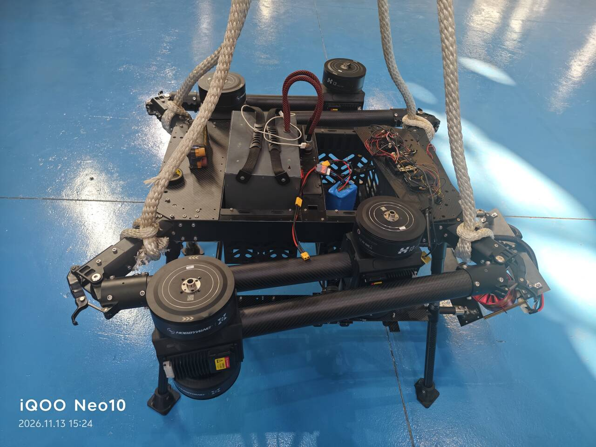
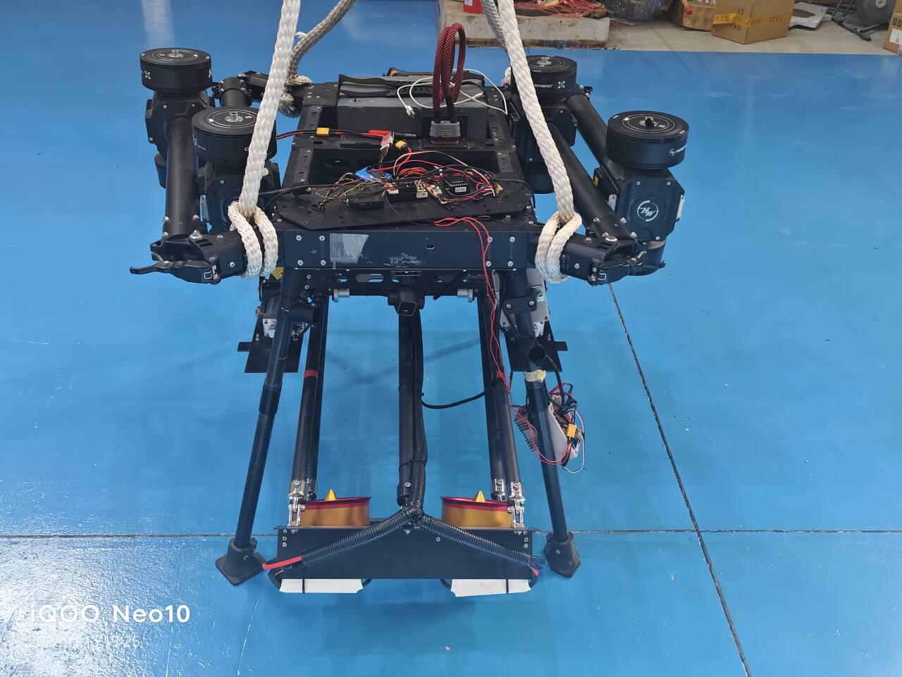

这半个月我一直在做一台机器上的一件很小的事：让板子能控制两个东西动—— 一路是风扇的转速，一路是伸缩杆的升降。听起来是两行代码的事， 实际上从协议、参数、时序、失效保护一路踩到 systemd， 中间推翻过三次设计。
这篇是开头。先把这个东西是什么、要动哪两路、以及为什么最后的结构是「飞控一个人说了算」讲清楚。 后面三篇再分别讲协议、仲裁和工程化。
一、这个东西是干什么的
新疆的光伏电站，板面积灰很快。灰尘挡光，发电量直接掉，而当地最缺的恰恰是水—— 传统的人工水洗在这类场站里成本高、周期长，人爬上去也不安全。
换一个思路：不洗，吹。让无人机挂着两台风機贴着板面走一遍， 把浮灰吹掉。风機要吹得有效，有两个前提——离板面够近， 以及转速够。这两件事，正好对应机上要控制的两路执行器。

这台机器是 100 公斤级。重量到这个量级，很多在小机器上可以随手做的事就变味了： 电机电流上百安、桨叶扫过的气流能把人推倒、任何一次误动作的代价都不是"摔一架小飞机"。 所以从第一天起，我在控制链上守的规矩就一条： 宁可少一个功能，不留一个"没人管得住"的输出。
二、要动的只有两路，但它们完全是两种东西

| 执行器 | 要控制什么 | 信号形态 | 通道 |
|---|---|---|---|
| 风机 | 转速，连续可调 | PWM 脉宽，1000–1600us 之间任意值 | AUX3 / 遥控器 CH11 |
| 伸缩杆 | 上 / 停 / 下，只有三个位置 | PWM 脉宽，只认 1000 / 1500 / 2000 三个整数 | AUX2 / 遥控器 CH6 |
这两路的差别比看上去大得多。风机是"连续量"，杆是三档"离散量"。 风机给 1250us 就是 1250us 对应的转速，中间每一档都有意义； 而杆的驱动器只认三个脉宽，遥控器给 1130us 它不认，给 1870us 它也不认—— 必须先把连续值量化成三档，再发出去。
第一版代码我就栽在这上面：遥控器 CH6 实测行程是 1050 → 1500 → 1950， 而驱动器要的是 1000 / 1500 / 2000。差了 50us 看着不多， 但它落在驱动器"不认识的区间"里，行为就是不确定的。
三、三条路，为什么选了最难的那条
板子（RK3588，Ubuntu 22.04）要控制这两路，逻辑上有三种接法。 我三条都摆出来对比过：
| 方案 | 接法 | 优点 | 致命问题 |
|---|---|---|---|
| B | 板子直接用 GPIO 出 PWM，绕过飞控，线直接接驱动器 | 链路最短，代码最简单 | Linux 不是实时系统，PWM 抖动受调度影响； 板子一崩，输出停在最后的值，没有任何人能接管 |
| C | 遥控器直通飞控（PWM_AUX_FUNC=409），板子并联一路做开关切换 |
平时摇杆直接生效，延迟最低 | 两路信号要在外部做切换电路， 切换瞬间的输出状态不可控；故障时到底谁在驱动，现场说不清 |
| A | 飞控是唯一的 PWM 输出者；板子通过 MAVLink 发指令， 遥控器也进飞控，由飞控/板子侧做优先级仲裁 | 输出只有一个源头，时序统一； 有超时、断链、上锁这些天然可用的保护机制 | 要自己实现仲裁逻辑；参数配错就完全不动（也确实踩了） |
选 A 的决定性理由不是"更优雅"，而是故障时的行为可预期。
方案 B 最要命的一点：Linux 上跑的那个 PWM 进程如果被 OOM killer 干掉、 或者整个板子死机，GPIO 会保持最后写进去的电平。 对风扇来说这是"继续吹"，对伸缩杆来说这是"继续往一个方向顶"。 而飞控固件里那些保护（信号丢失回中、超时、上锁）全都建立在 "输出是我发的"这个前提上——绕过它，等于把这些保护一起扔了。
四、方案 A 的实际结构
两路输入、一个输出者。遥控器和板子都进飞控，飞控按 PWM_AUX_FUNC*
把 Offboard 指令通道绑到具体的 AUX 口上：
注意图上输出那一侧：AUX3 和 AUX2 挂在同一个定时器 TIM5 上，
和 AUX1、AUX4 一组，共用 PWM_AUX_TIM0 这个频率参数。
这点在后面用示波器验证的时候会再出现一次——因为它意味着
两路输出的刷新率是绑死在一起的，不是各调各的。
五、先给这条链做一次体检
在动任何代码之前，我写了一个 probe 子命令，
把飞控里和这条链有关的参数一次性拉出来全量看一遍（1166 项）。
这个决定后来救了很多时间——大部分"代码不生效"的问题，
在现场其实表现为"参数和你想的不一样"。
python3 px4_actuator_client.py probe
它输出的五段，正好对应这条链的五个环节：
| 段 | 看什么 | 当时的实际值 |
|---|---|---|
| 1 · MAVLink 实例 | 板子从哪个口进来 | MAV_2 = Ethernet，14540，模式 2 |
| 2 · 安全与预解锁 | 非油门执行器要不要解锁 | COM_PREARM_MODE=2（Always），CBRK_IO_SAFETY=22027（安全开关已旁路） |
| 3 · 输出口分配 | 每个 AUX 口绑了什么功能、范围多少 | AUX2 = Set2（1000/1500/2000）；AUX3 = Set3（1000/1300/1600） |
| 4 · 遥控器通道映射 | 摇杆通道和 AUX 口的对应关系 | RC_MAP_AUX2→CH6、RC_MAP_AUX3→CH11 |
| 5 · 诊断 | 有没有配了却没人驱动的死口 | 已配 Offboard Actuator: AUX2=Set2, AUX3=Set3 |
第 5 段是这份体检报告里最有价值的部分：它不列出"有什么"， 而是列出"什么看起来有、实际没有"。当时它报了一条：
⚠ AUX6 配成 RC AUX 6，但 RC_MAP_AUX6=0 —— 该口无通道驱动，等于死口
这个口配了功能，但没有任何遥控器通道喂它，所以它永远输出 1500。 不影响这次任务，但这种"配置存在、功能不存在"的口， 在排障时是最容易被误当成原因的一条——因为它看起来是"已配置"的。
probe，再看代码。顺序反过来会浪费大量时间——
你会去怀疑自己刚写的那二十行，而问题在三个月前配的一个参数上。
六、第一次拿到"真的在动"的证据
软件层面能看到的只有"我发了什么"，看不到"线上实际是什么"。
这两件事之间的差距，是这一整套东西里最容易骗人的地方——
日志写着 输出 1200us，可能线上什么都没有。
所以风扇这一路跑通之后，我做的第一件事是接示波器， 把飞控 AUX 口的实际输出抓下来。三张图对应三个不同指令：


这三张图值得单独说一句，因为它们同时确认了三件事：
- 指令真的变成了电信号。 不是"程序说它发了"，是线上真的有这个宽度。
-
频率是 50Hz，正好等于
PWM_AUX_TIM0的值。 AUX1–4 共用 TIM5，所以这个频率是四个口一起的， 不是每个口单独设的——这一点在同时驱动两路的时候很关键。 - 改的是脉宽，不是频率。 周期从头到尾 20.00ms 没变过。这条对舵机、电调、驱动器都成立： 它们读的是高电平持续多久，不是重复得多快。
七、后面三篇写什么
这一篇只到"结构定了、链路通了"。真正花时间的是下面三件事：
-
协议层：一条
DO_SET_ACTUATOR怎么同时控两路、NaN是什么语义、PWM_AUX_FUNC那几个枚举值分别代表什么。 还有那个让遥控器"推不动"的坑——PX4 1.16 废弃了旧的取流接口。 - 仲裁层：遥控器和板子同时想控的时候谁说了算。 这一块我推翻过三次设计，最后落在一条很硬的语义上： 松手就停，不回旧值。
- 工程层：怎么让一个 Python 脚本变成"上电就在跑"的东西， 以及没有终端的时候怎么给它下指令。
如果这个系列只留一句关于架构的话，我留这句： 执行器的输出源头，一个就够；多一个，就多一种没人能解释的故障。